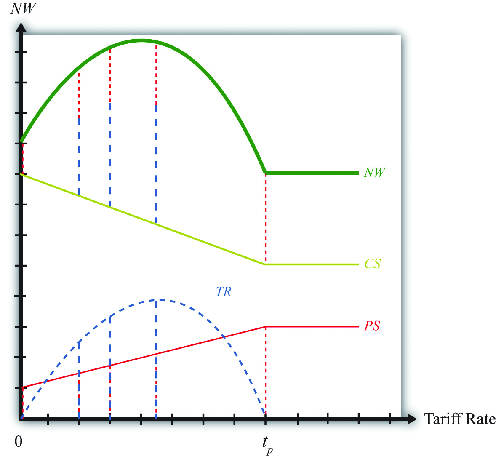
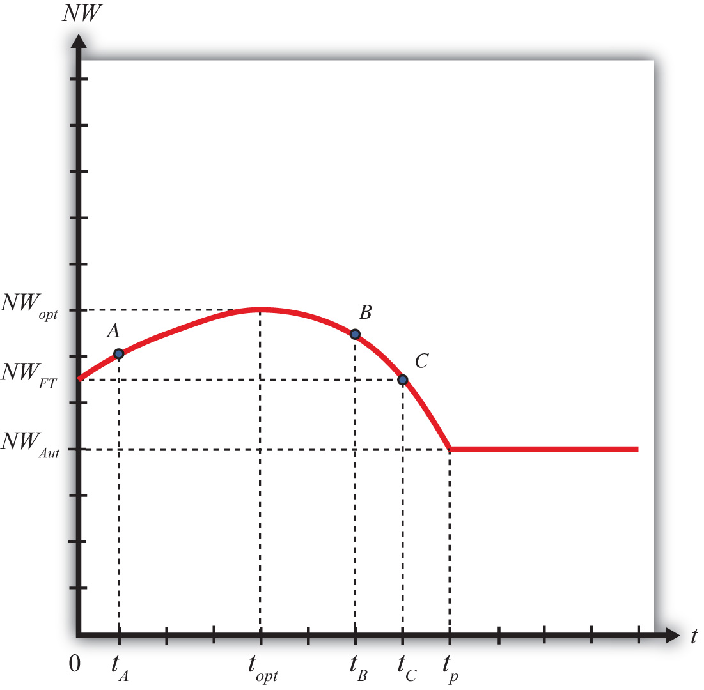

The possibility that a tariff could improve national welfare for a large country in international markets was first noted by Robert Torrens. Since the welfare improvement occurs only if the terms of trade gain exceeds the total deadweight losses, the argument is commonly known as the terms of trade argument for protection.
Economists have studied the conditions under which a tariff will improve welfare in a variety of perfectly competitive models. This section describes the general results that come from that analysis.
Consider Figure 7.15 "Derivation of the Optimal Tariff: Large Country", which plots the levels of consumer surplus (CS), producer surplus (PS), and tariff revenue (TR) at different tariff rates. The origin corresponds to a zero tariff rate, or free trade. As the tariff is increased from zero, consumer surplus falls since the domestic price rises. This is shown by the solid declining (green) CS line. When the tariff becomes prohibitive at tp, the price settles at the autarky price, and any further increases in the tariff have no effect on consumer surplus. Hence the CS line becomes flat above tp.
Figure 7.15 Derivation of the Optimal Tariff: Large Country
Producer surplus (PS), the red dotted line, rises as the tariff is increased from zero; however, it rises at a lower rate than consumer surplus falls. This occurs because, for an importing country, producer surplus increases are less than the change in consumer surplus for any increase in the tariff. When the prohibitive tariff is reached, again the price settles at the autarky price, and any further increases in the tariff rate have no effect on producer surplus.
Tariff revenue (TR), the blue dashed line, first increases with the increase in the tariff and then decreases for higher tariff rates. This occurs because tariff revenue equals the tariff rate multiplied by imports. As the tariff is increased from zero, imports fall at a slower rate than the increase in the tariff rate, hence revenue rises. Eventually, imports begin to fall faster than the tariff rate rises, and tariff revenue declines. The tariff rate that generates the highest tariff revenue is called the maximum revenue tariffThe tariff that achieves the highest government revenue..
Another way to see that tariff revenue must rise and then fall with increasing tariffs is to note that when the tariff rate is zero, tariff revenue has to be zero for any level of imports. Also, when the tariff rate is at or above tp, the prohibitive tariff, imports are zero, thus whatever the tariff rate, tariff revenue again must be zero. Somewhere between a zero tariff and the prohibitive tariff, tariff revenue has to be positive. Thus tariff revenue must rise from zero and then fall back to zero when it reaches tp.
The national welfare level at each tariff rate is defined as the sum of consumer surplus, producer surplus, and tariff revenue. The vertical summation of these three curves generates the national welfare (NW) curve given by the thick, solid blue-green line. In Figure 7.15 "Derivation of the Optimal Tariff: Large Country", the vertical summation is displayed for five different levels of the tariff rate.
The basic shape of the national welfare line is redrawn in Figure 7.16 "Optimal Tariff: Large Country Case". Note that national welfare first rises and then falls as the tariff is increased from zero. For one tariff rate (topt), the country can realize the highest level of national welfare (NWopt), one that is higher than that achievable in free trade. We call that tariff rate the “optimal tariff.” One regularity that results is that the optimal tariff is always less than the maximum revenue tariff.
Figure 7.16 Optimal Tariff: Large Country Case
If the tariff is raised above the optimal rate, as with an increase from topt to tB, then national welfare will fall. The terms of trade gain, which rises as low tariffs are increased, will begin to fall at a higher tariff rate. Since the deadweight losses continue to rise, both effects contribute to the decline in national welfare. Note, however, that at a tariff level like tB, national welfare still exceeds the free trade level.
Eventually, at even higher tariff rates, national welfare will fall below the free trade level. In Figure 7.16 "Optimal Tariff: Large Country Case", this occurs at tariff rates greater than tC. The higher the tariff is raised, the lower will be the level of imports. At a sufficiently high tariff, imports will be eliminated entirely. The tariff will prohibit trade. At the prohibitive tariff (tp), there is no tariff revenue, which implies that the previously positive terms of trade gain is now zero. The only effect of the tariff is the deadweight loss. The economy is effectively in autarky, at least with respect to this one market, hence national welfare is at NWAut. Note that any additional increases in the tariff above tp will maintain national welfare at NWAut since the market remains at the autarky equilibrium.
Trade liberalization can be represented by a decrease in the tariff rate on imports into a country. If the country is large in international markets, then the analysis in this chapter suggests that the effect on national welfare will depend on the values of the original tariff rate and the liberalized tariff rate.
For example, if the tariff is reduced from topt to tA, then national welfare will fall when the country liberalizes trade in this market. However, if the tariff is reduced from tB to topt, then national welfare will rise when trade liberalization occurs. This implies that trade liberalization does not necessarily improve welfare for a large importing country.
Jeopardy Questions. As in the popular television game show, you are given an answer to a question and you must respond with the question. For example, if the answer is “a tax on imports,” then the correct question is “What is a tariff?”